R–05Groove
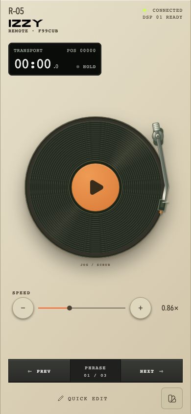
Версия 2 · HOLDУбрана опора с поверхности пластинки. Сохранён подвижный тонарм.
R–16Clear
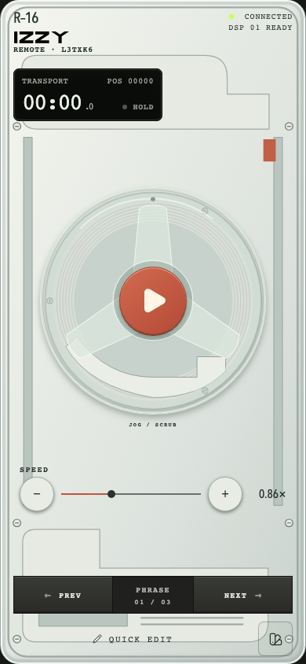
Версия 2 · HOLDПрозрачная деталь вращается над неподвижной катушкой и несущими пластинами.
R–17Spool
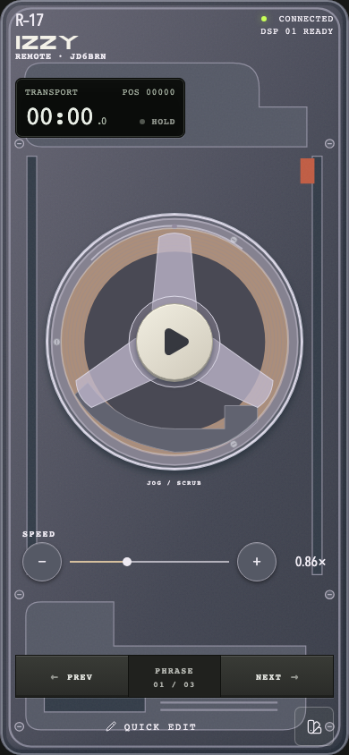
Версия 2 · HOLDДымчатое стекло, медная катушка, круглая светлая кнопка. Без наложенной ленты.
R–13Foundry
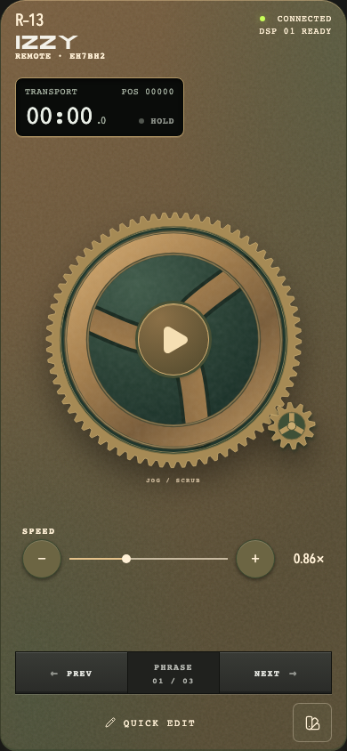
Версия 2 · HOLDНастоящий зубчатый обод и малая шестерня с общим шагом.
R–01Field reel
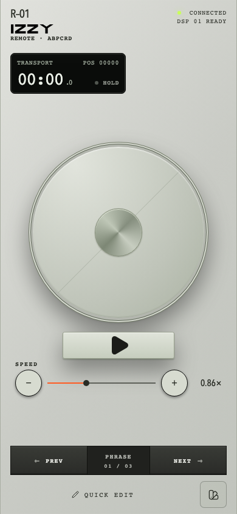
Версия 2 · HOLDУбрана лента, которая перекрывала диск. Вернулась чистая широкая поверхность.
R–04Signal
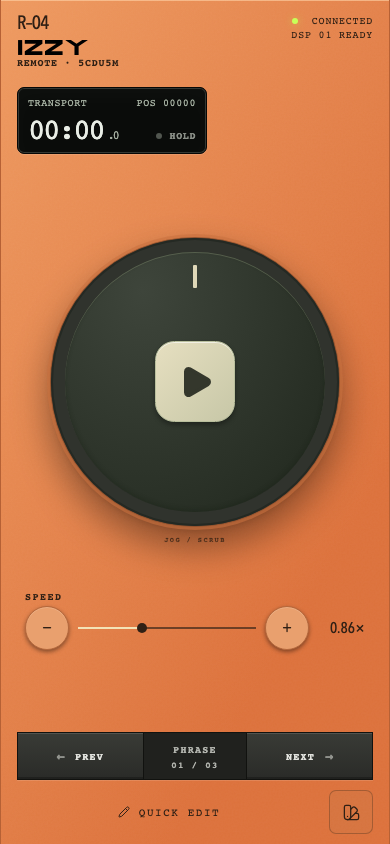
Версия 2 · HOLDУбран флажок. Сохранены оранжевый корпус и спокойный диск.
R–06Glacier
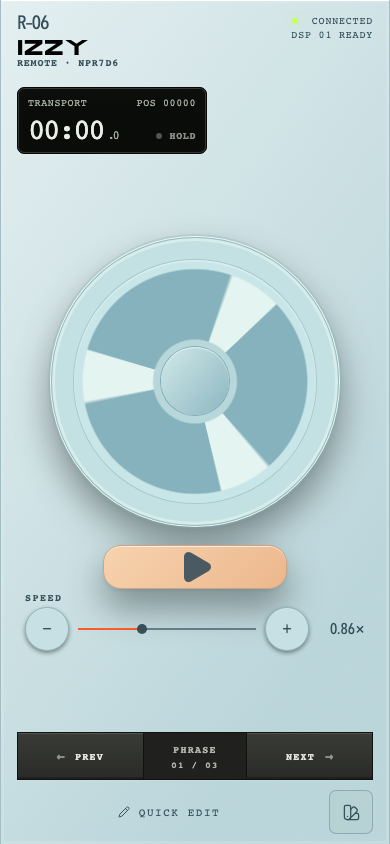
Версия 2 · HOLDУбран боковой привод. Сохранена лёгкая трёхлучевая форма.
R–10Cartridge
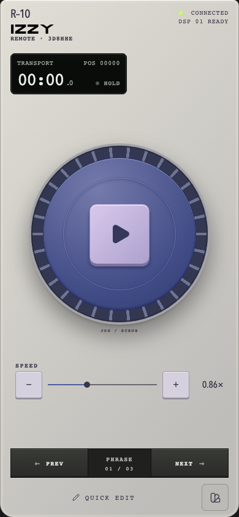
Версия 2 · HOLDУбрана кассета поверх колеса. Сохранён рифлёный синий диск.
R–08Switchboard
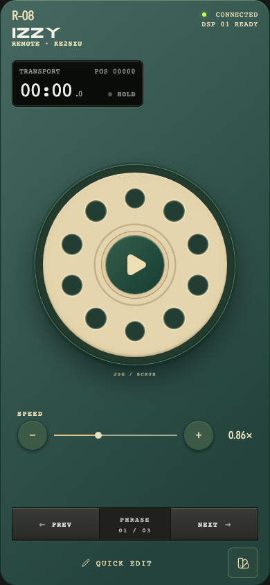
Версия 2 · HOLDУбрана добавленная стрелка-упор.
R–12Correspondent
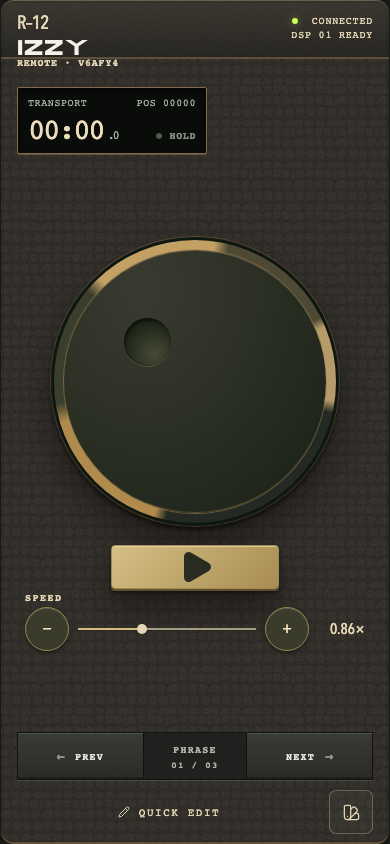
Версия 2 · HOLDУбран рычаг, который перекрывал колесо.
R–20Moss
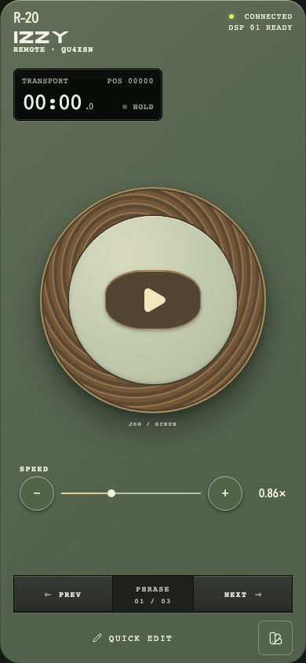
Версия 2 · HOLDУбрана прорезь, которая уходила под кнопку.
R–25Rally
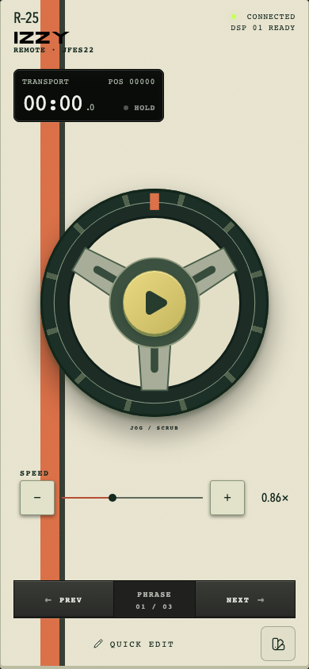
Версия 2 · HOLDТеперь это трёхспицевый автомобильный руль с перфорированными спицами и круглой ступицей.
R–00Original
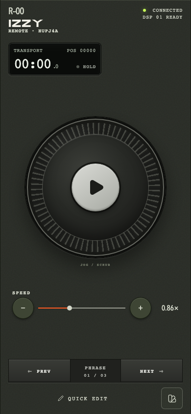
Версия 2 · HOLDСохранён характер предмета. Новых накладных деталей не добавляли.
R–03Orbit
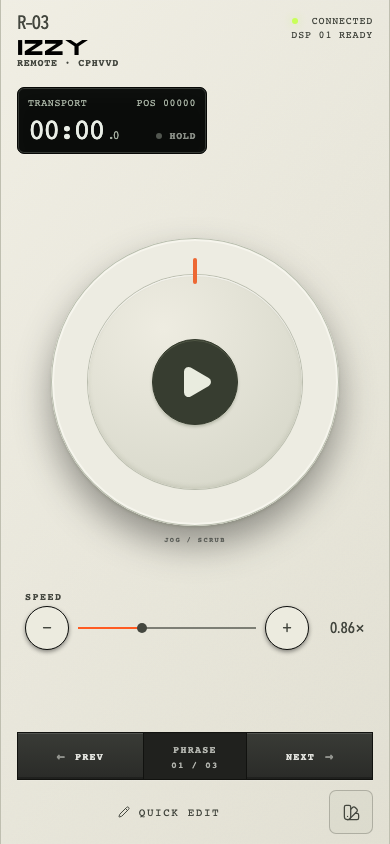
Версия 2 · HOLDСохранён характер предмета. Новых накладных деталей не добавляли.
R–02Thumbprint
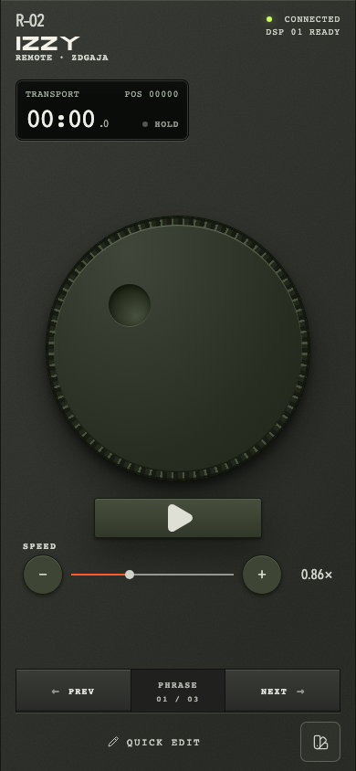
Версия 2 · HOLDСохранён характер предмета. Новых накладных деталей не добавляли.
R–07Bakelite
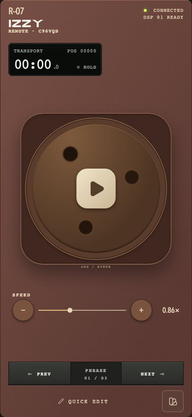
Версия 2 · HOLDСохранён характер предмета. Новых накладных деталей не добавляли.
R–09Vector
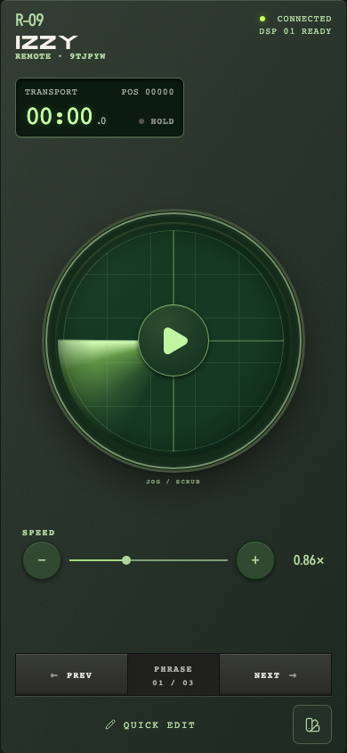
Версия 2 · HOLDСохранён характер предмета. Новых накладных деталей не добавляли.
R–11Aperture
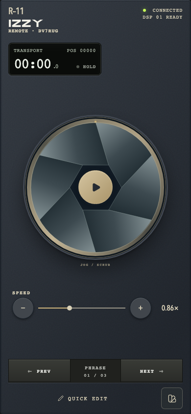
Версия 2 · HOLDСохранён характер предмета. Новых накладных деталей не добавляли.
R–14Inox
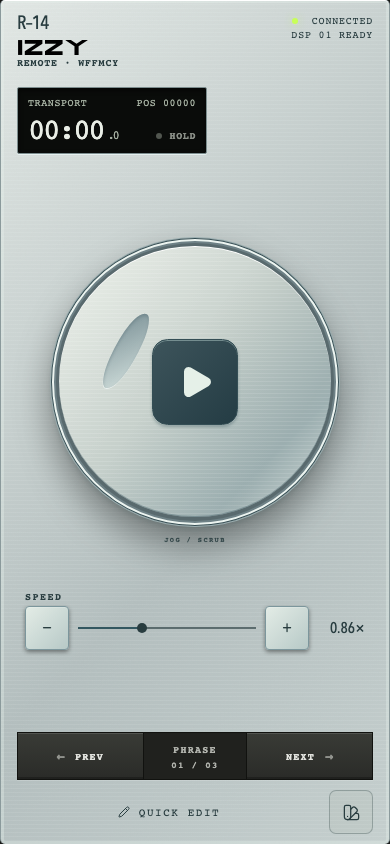
Версия 2 · HOLDСохранён характер предмета. Новых накладных деталей не добавляли.
R–15Airframe
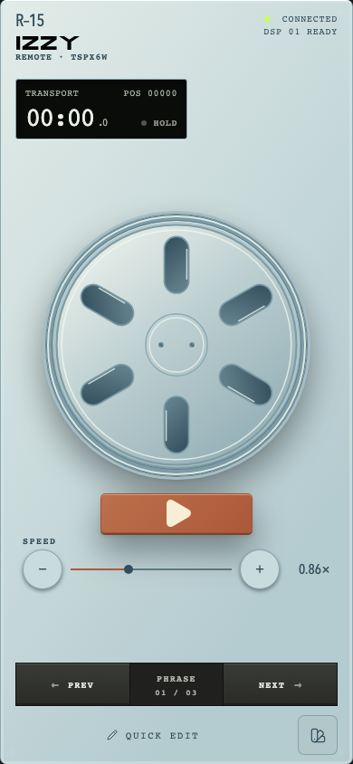
Версия 2 · HOLDСохранён характер предмета. Новых накладных деталей не добавляли.
R–18Glaze
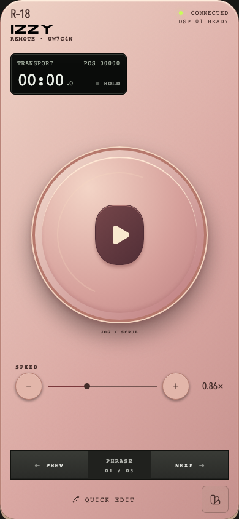
Версия 2 · HOLDСохранён характер предмета. Новых накладных деталей не добавляли.
R–19Pop
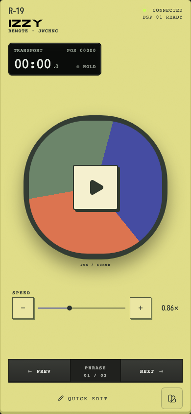
Версия 2 · HOLDСохранён характер предмета. Новых накладных деталей не добавляли.
R–21Mono
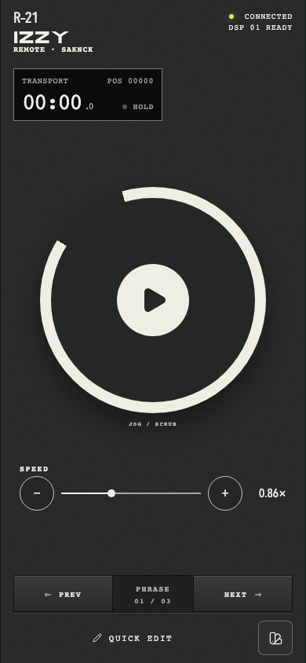
Версия 2 · HOLDСохранён характер предмета. Новых накладных деталей не добавляли.
R–22Loom
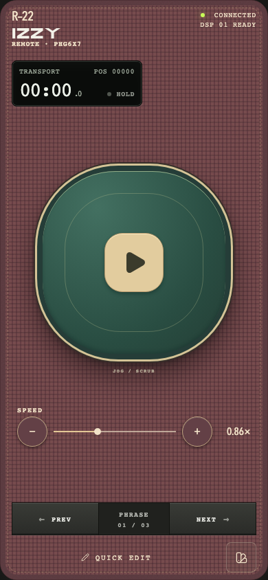
Версия 2 · HOLDСохранён характер предмета. Новых накладных деталей не добавляли.
R–23Arcade
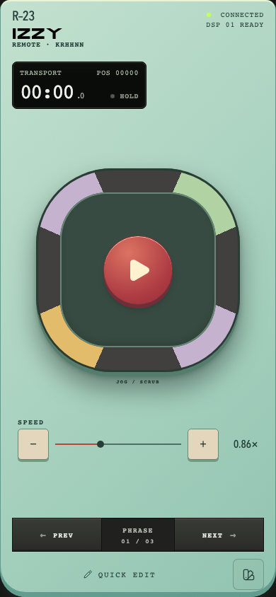
Версия 2 · HOLDСохранён характер предмета. Новых накладных деталей не добавляли.
R–24Observatory
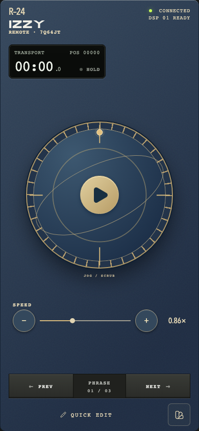
Версия 2 · HOLDСохранён характер предмета. Новых накладных деталей не добавляли.